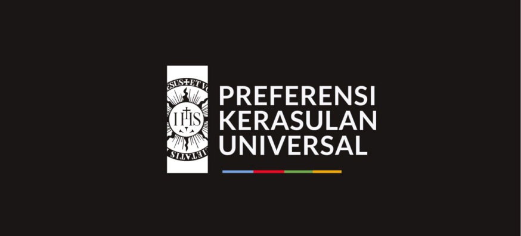
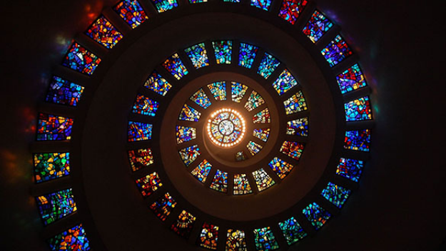
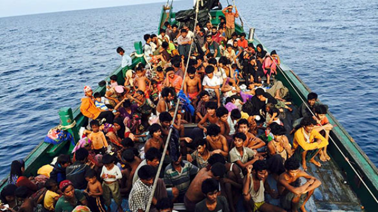
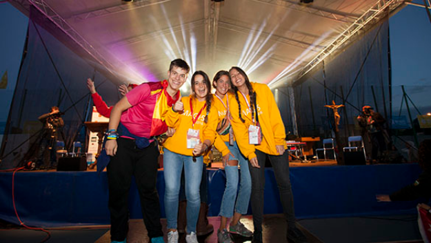
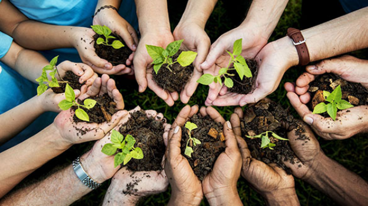
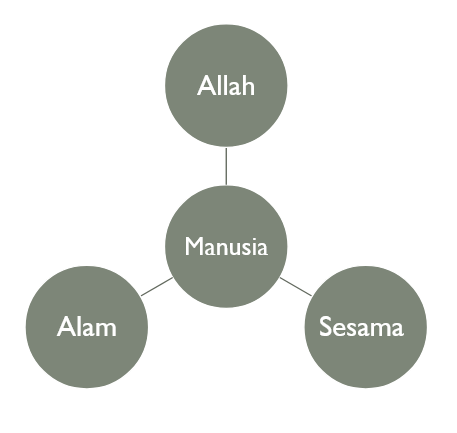

### Universal Apostolic Preferences --- ## If you could change *one thing* in this world, what will it be? --- ### Kami, Serikat Yesus juga ingin mengubah dunia, tetapi tidak semua hal bisa kami buat. Maka ada prioritas mana yang harus dibuat lebih dahulu. Itulah UAP. --- ### Kami, **Serikat Yesus** juga ingin mengubah dunia, tetapi **tidak semua** hal bisa kami buat. Maka ada **prioritas** mana yang harus dibuat lebih dahulu. Itulah **UAP**. --- ### Serikat Yesus --- ### Serikat Yesus - Ordo religius imami di bawah Gereja Katolik Roma --- ### Serikat Yesus - Ordo religius imami di bawah Gereja Katolik Roma - Didirikan oleh Ignatius Loyola dan enam kawannya --- ### Serikat Yesus - Ordo religius imami di bawah Gereja Katolik Roma - Didirikan oleh Ignatius Loyola dan enam kawannya - Ordo dengan anggota terbanyak di seluruh dunia --- ### Serikat Yesus - Ordo religius imami di bawah Gereja Katolik Roma - Didirikan oleh Ignatius Loyola dan enam kawannya - Ordo dengan anggota terbanyak di seluruh dunia - Berperan di bidang pendidikan, kerasulan sosial, evengelisasi, dll. di 112 negara. ---  --- ## Universal Apostolic Preferences <p style="color: #79A3DC;">1. Menunjukkan Jalan menuju Allah</p> --- ## Universal Apostolic Preferences <p style="color: #79A3DC;">1. Menunjukkan Jalan menuju Allah</p> <p style="color: #EA0029;">2. Berjalan Bersama yang Terkucilkan</p> --- ## Universal Apostolic Preferences <p style="color: #79A3DC;">1. Menunjukkan Jalan menuju Allah</p> <p style="color: #EA0029;">2. Berjalan Bersama yang Terkucilkan</p> <p style="color: #EBA900;">3. Penjelajahan Besama Orang Muda</p> --- ## Universal Apostolic Preferences <p style="color: #79A3DC;">1. Menunjukkan Jalan menuju Allah</p> <p style="color: #EA0029;">2. Berjalan Bersama yang Terkucilkan</p> <p style="color: #EBA900;">3. Penjelajahan Besama Orang Muda</p> <p style="color: #71A850;">4. Merawat Rumah Kita Bersama</p> --- <h4 style="color: #79A3DC;">1. Menunjukkan Jalan menuju Allah</h4> <div class="container" style="background:whitesmoke;"> <div class="col">  </div> <div class="col" style="background:#79A3DC; font-size: 30px; color:whitesmoke; padding:5px;"> Menularkan Diskresi dan “Latihan Rohani”, membantu orang menemukan Tuhan dan menghayati jalan-Nya, menemani orang ketika mereka melakukan diskresi atas pilihan rumit, menawarkan alternatif lebih dalam dari sekularisme. </div> </div> --- <h4 style="color: #79A3DC;">1. Menunjukkan Jalan menuju Allah</h4> <div class="container" style="background:whitesmoke;"> <div class="col"> </div> <div class="col" style="background:#79A3DC; font-size: 30px; color:whitesmoke; padding:5px;"> Realitanya: Kita terus menerus dicecar dengan aneka imaginasi dan pilihan sehingga hampir tidak ada ruang untuk menemukan jatidiri atau membiarkan Tuhan menemukan kita. Kita sering tidak tahu atau kehilangan kerinduan, dambaan, dan makna panggilan hidup. </div> </div> --- <h4 style="color: #79A3DC;">1. Menunjukkan Jalan menuju Allah</h4> <div class="container" style="background:whitesmoke;"> <div class="col"> </div> <div class="col" style="background:#79A3DC; font-size: 30px; color:whitesmoke; padding:5px;"> Di JB: Examen, Retret, Refleksi, Campus Ministry </div> </div> --- <h4 style="color: #EA0029;">2. Berjalan Bersama yang Terkucilkan</h4> <div class="container" style="background:whitesmoke;"> <div class="col">  </div> <div class="col" style="background:#EA0029; font-size: 30px; color:whitesmoke; padding:5px;"> Berjalan bersama kaum miskin, mereka yang terbuang di dunia, mereka yang martabatnya telah diperkosa, dalam misi rekonsiliasi dan keadilan </div> </div> --- <h4 style="color: #EA0029;">2. Berjalan Bersama yang Terkucilkan</h4> <div class="container" style="background:whitesmoke;"> <div class="col"> </div> <div class="col" style="background:#EA0029; font-size: 30px; color:whitesmoke; padding:5px;"> Realitanya: Kita melihat kesenjangan antara yang kaya dan yang miskin semakin besar di seluruh dunia dan kita mendengar setiap minggu ratusan orang mati ketika mencoba menuju tempat tinggal baru. Para Pemimpin politik menyalakan kebencian dan membangun tembok pemisah tanpa pintu kepedulian. Yang lebih menyakitkan, ada realitas anak-anak yang dilecehkan secara fisik/seksual. </div> </div> --- <h4 style="color: #EA0029;">2. Berjalan Bersama yang Terkucilkan</h4> <div class="container" style="background:whitesmoke;"> <div class="col"> </div> <div class="col" style="background:#EA0029; font-size: 30px; color:whitesmoke; padding:5px;"> Di JB: Live-in, Bantingan, Aksi Sosial </div> </div> --- <h4 style="color: #EBA900;">3. Penjelajahan Besama Orang Muda</h4> <div class="container" style="background:whitesmoke;"> <div class="col">  </div> <div class="col" style="background:#EBA900; font-size: 30px; color:whitesmoke; padding:5px;"> Menemani kaum muda dalam menciptakan masa depan yang penuh harapan </div> </div> --- <h4 style="color: #EBA900;">3. Penjelajahan Besama Orang Muda</h4> <div class="container" style="background:whitesmoke;"> <div class="col"> </div> <div class="col" style="background:#EBA900; font-size: 30px; color:whitesmoke; padding:5px;"> Realitanya: Masa muda adalah saat membentuk keputusan fundamental dan awal membangun mimpi. Namun, kaum muda zaman ini menghadapi tantangan raksasa: ketidakjelasan relasi di era digital, berkurangnya kesempatan kerja, meningkatnya kekerasan politik, diskriminasi, dan kerusakan lingkungan. Semua ini menimbulkan kesulitan bagi mereka untuk membangun relasi pribadi dan keluarga yang mendukung. </div> </div> --- <h4 style="color: #EBA900;">3. Penjelajahan Besama Orang Muda</h4> <div class="container" style="background:whitesmoke;"> <div class="col"> </div> <div class="col" style="background:#EBA900; font-size: 30px; color:whitesmoke; padding:5px;"> Di JB: semua bentuk pendampingan (Wali Kelas, BK, Kepamongan) </div> </div> --- <h4 style="color: #71A850;">4. Merawat Rumah Kita Bersama</h4> <div class="container" style="background:whitesmoke;"> <div class="col">  </div> <div class="col" style="background:#71A850; font-size: 30px; color:whitesmoke; padding:5px;"> Bekerja, dengan kedalaman Injil, bagi perlindungan dan pembaruan Ciptaan Tuhan </div> </div> --- <h4 style="color: #71A850;">4. Merawat Rumah Kita Bersama</h4> <div class="container" style="background:whitesmoke;"> <div class="col"> </div> <div class="col" style="background:#71A850; font-size: 30px; color:whitesmoke; padding:5px;"> Realitanya: Alam ciptaan tidak pernah menangis sesedih seperti saat ini, menjerit dalam hati kita sambil menantikan pembebasan (Rm 8). Krisis lingkungan saat ini berdampak secara khusus pada kaum miskin dan rentan. Dari orang Kritiani dan semua orang berkehendak baik, dibutuhkan tindakan segera. Seluruh bangsa dan negara memerlukan pertobatan ekologis jika kita ingin menjadi penjaga yang jujur atas bumi yang asri ini. Kita masih dapat mengubah jalannya sejarah. </div> </div> --- <h4 style="color: #71A850;">4. Merawat Rumah Kita Bersama</h4> <div class="container" style="background:whitesmoke;"> <div class="col"> </div> <div class="col" style="background:#71A850; font-size: 30px; color:whitesmoke; padding:5px;"> Di JB: Ekskursi, Pemilahan Sampah, Laudato Si. </div> </div> --- ## Mitos vs. Fakta <div class="container"><div class="col" data-id="11">Politik kita tunduk pada teknologi dan keuangan</div> <div class="col"></div></div> --- ## Mitos vs. Fakta <div class="container"><div class="col" data-id="11">Politik kita tunduk pada teknologi dan keuangan</div> <div class="col"><b>Fakta</b></div></div> --- ## Mitos vs. Fakta <div class="container"><div class="col" data-id="11">Perkembangan Ilmu pengetahuan dan teknologi selalu membawa kemajuan</div> <div class="col"></div></div> --- ## Mitos vs. Fakta <div class="container"><div class="col" data-id="11">Perkembangan Ilmu pengetahuan dan teknologi selalu membawa kemajuan</div> <div class="col"><b>Mitos</b></div></div> --- ## Mitos vs. Fakta <div class="container"><div class="col" data-id="11">Masalah ekologi akan dipecahkan hanya melalui penerapan teknologi baru</div> <div class="col"></div></div> --- ## Mitos vs. Fakta <div class="container"><div class="col" data-id="11">Masalah ekologi akan dipecahkan hanya melalui penerapan teknologi baru</div> <div class="col"><b>Mitos</b></div></div> --- ## Rekonsiliasi dengan Alam  --- Kepedulian kita terhadap ekologi dan ciptaan perlu dilihat pertama-tama dalam konteks dua jenis relasi: dengan Tuhan dan dengan sesama. Dengan kata lain, pemulihan hubungan dengan lingkungan perlu dilihat sebagai sebuah konsekuensi dari komitmen kita untuk membangun relasi yang adil dengan *Tuhan* (komitmen terhadap iman) dan dengan *sesama* (komitmen terhadap keadilan).